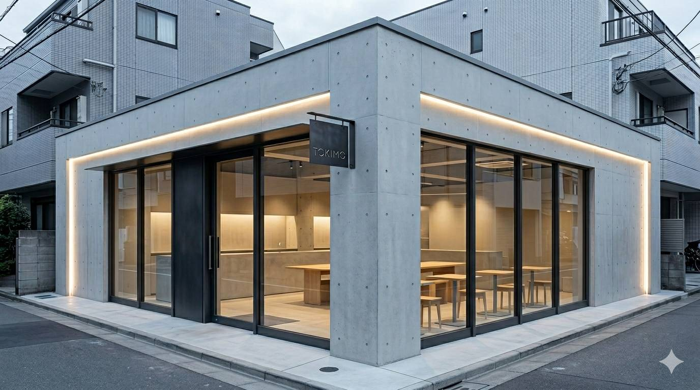
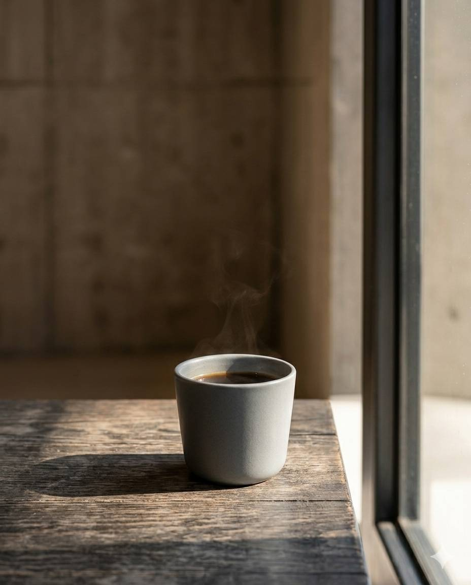
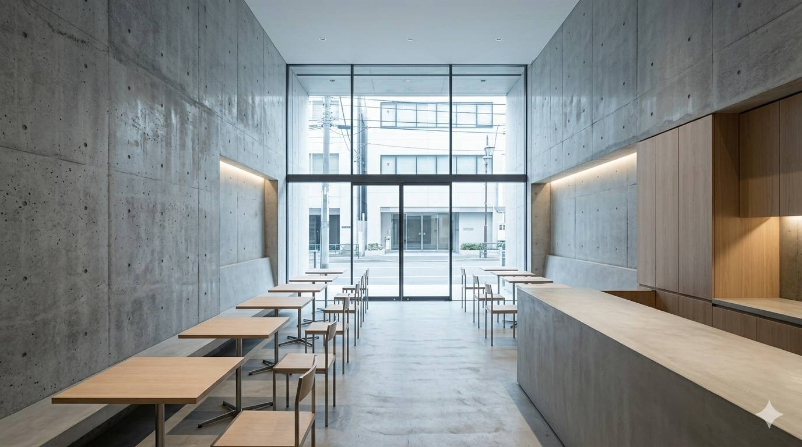
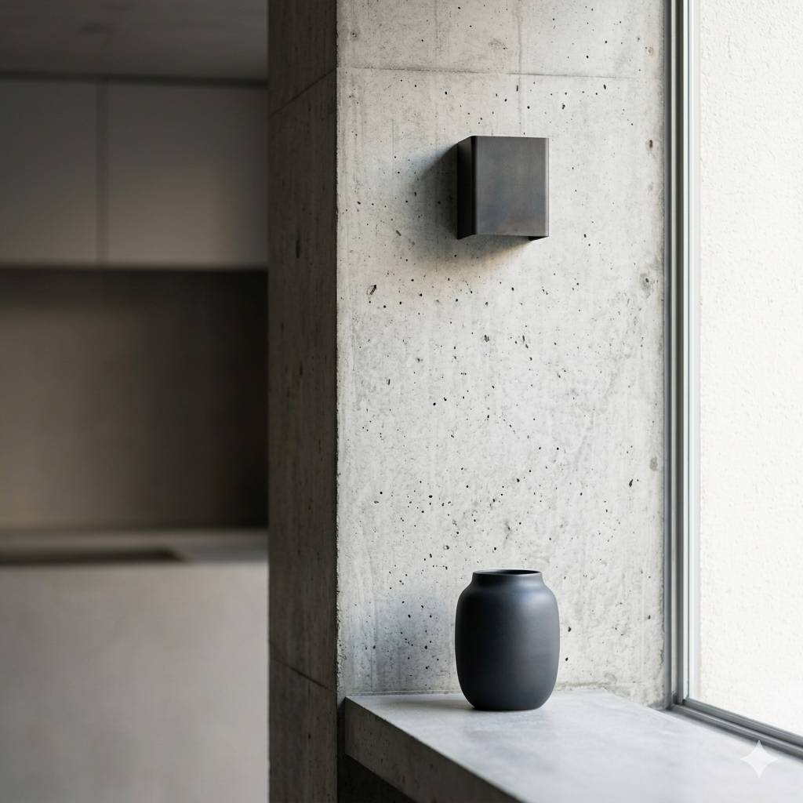
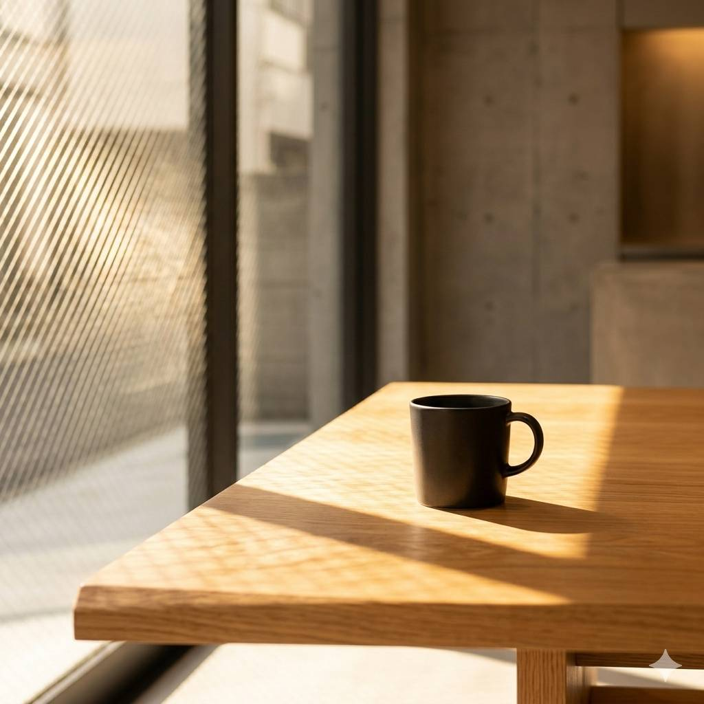

Vol. 02 / Space
Slow Coffee
Slow Coffee
Collective.
01
Menu & Pricing
엄선된 원두와 계절의 풍미를 담은 디저트를 제안합니다. 가격은 소재의 가치와 공간의 경험을 포함합니다.

Spatial Experience
Sequence of Space
1,200mm
2,400mm
Grinder
Espresso Machine
Selected Materials
Concrete
Oak Wood
Stainless Steel
Warm Glass
03. Functional Storage
보이지 않는 곳까지 설계의 영역입니다. 모든 바리스타의 동선과 기기 배치는 1mm 단위의 도면 위에서 결정되었습니다.

04-05. Stay & Rhythm
고정된 좌석과 유연한 가구의 조화. 높낮이가 다른 좌석 배치를 통해 각자의 시선이 겹치지 않는 개인적인 정적을 제공합니다.
PHOTO ARCHIVE

06. The Last Frame
빛이 가장 깊게 들어오는 구석, 브랜드의 정체성이 담긴 오브제 하나. 이곳은 손님의 기억이 기록으로 남는 '포토 스팟'입니다.
The Vibe
余白と静寂
余白と静寂
(여백과 정적)
Concrete Texture

Warm Sunlight